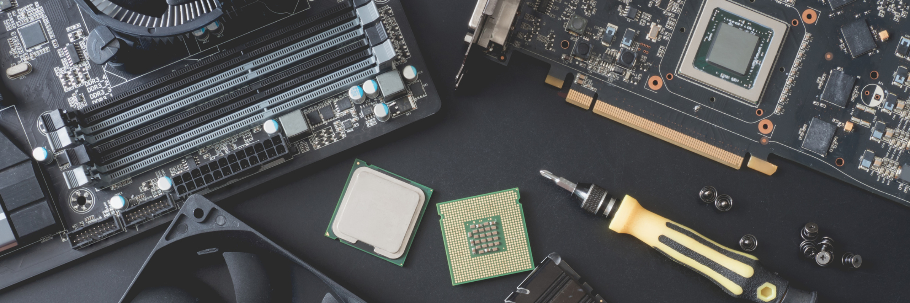

Services
Equipment diagnosis
We carry out detailed diagnostics to RAM memories, processors, and hard drives to know their current state of health, in order to determine and avoid the risks of information loss.
Corrective and preventive maintenance
Nowadays, most of us have a portable device, be it a cell phone, a laptop, or a desktop computer at home. If we are careless and place these components in inappropriate places, over time they will accumulate dust, adhere to the electronic cards, and in the long run different problems will arise, be they intermittent, performance and that the computer does not turn on. So that this does not start, it is essential to maintain it every 6 months, we offer you a thorough and in-depth service to extract dust and other residues inside the cabinet of your computer or laptop. We also take care of correcting failures that occur in the operating system.
Backups & files recovery
Did you accidentally deleted important files and they are no longer in the recycle bin? do you want to backup files from an old computer? if your answer was 'yes', don't worry, we can get them back.
Equipment assembly
Are you an office worker or a student and need a computer to perform basic tasks? or do you need a computer to play video games? who doesn't like video games? no problem, we build the computer that fits your needs! we give you the best solution in terms of speed and performance according to your budget.
Hardware upgrades
Does your computer take hours to start and your applications take time to open? we upgrade your computer with ssd solid state drives or expand the memory of your equipment. Do you need a new processor or a new video card? we will install it for you.

Windows formatting and installation
We back up your files and format your computer, install legitimate Windows 10 or 11 licenses and optimize your computer.
Web development
Have you just started a small business and need a website? we can help you!